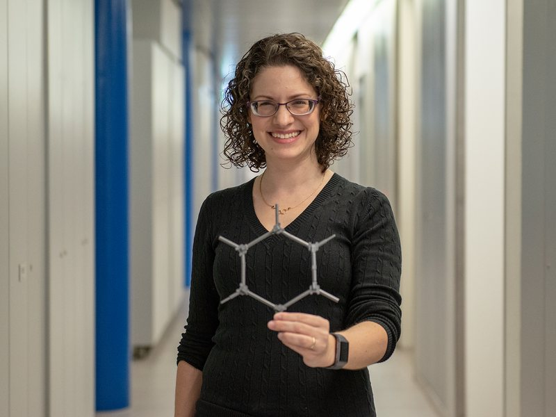

Renana Gershoni-Poranne is an Associate Professor of Computational Organic Chemistry at the Schulich Faculty of Chemistry at the Technion – Israel Institute of Technology. Her group works in the field of computational physical organic chemistry, with a focus on polycyclic aromatic systems and the concept at their heart: aromaticity. The group studies how aromaticity relates to other molecular properties and to reactivity, and develops methods and tools for visualizing, interpreting, and predicting these properties. Much of the group's work is data-driven: the group established The COMPAS Project, the first computational database of polycyclic aromatic systems, and uses machine-learning and deep-learning models to design new molecules and uncover structure-property relationships. Together with experimental collaborators around the world, the group also investigates reactivity and reaction mechanisms, from ligand non-innocence in organometallic catalysts to the rational design of antiaromatic indenofluorenes.
Renana completed her BSc, MSc, and PhD at the Schulich Faculty of Chemistry at the Technion. She received her MSc Summa cum Laude for her work on functionalization of corannulene in the group of Prof. Ehud Keinan, and her PhD under the supervision of Prof. Amnon Stanger, where she worked on elucidating the properties of aromatic compounds and developed methods for identifying and quantifying aromaticity in polycyclic aromatic hydrocarbons. In 2015, she moved to the ETH Zürich as a VATAT postdoctoral fellow in the group of Prof. Peter Chen, and in 2017 she was promoted to Senior Scientist (Group Leader), leading her own independent sub-group within the Chen laboratory. In 2019, she was awarded a Branco Weiss Fellowship. She returned to the Technion in October 2021 as an Assistant Professor, and was promoted to Associate Professor in 2025.
Renana's achievements have been recognized by national and international awards, including the Outstanding Young Scientist Award of the Israel Chemical Society (2026), the Liebig Lectureship Award of the Organic Chemistry Division of the GDCh (2025), the Academic Young Investigator Award of the Division of Organic Chemistry of the ACS and EuChemS (2025), and the Krill Prize for Excellence in Scientific Research from the Wolf Foundation (2024). She is also a Horev Fellow (Leaders in Science and Technology) and an Alon Scholar. She served as Associate Editor of the Journal of Physical Organic Chemistry (2023–2026), and in 2026 was appointed Topic Editor of the Journal of the American Chemical Society. Renana is a dedicated teacher, and her teaching has been recognized with the Golden Owl Award at ETH Zürich (2021) and with numerous teaching awards at the Technion.
On a personal note: Renana and her partner, Roi, are parents to two boys who were both born during Renana's PhD. She is a classically trained soprano coloratura and loves different types of music. You will often find her humming some opera or country music tune. Renana is a voracious reader, an avid puzzle-solver, and an enthusiastic cake and cupcake baker.
Milestones
Hover over (or tap) any point for details. Use the buttons above to zoom in, and the ones below the chart to show or hide categories.
Shaded bands show career stages. Larger dots mark plenary and award talks, major awards, major editorial roles, and larger grants; dashed dots above the “today” line are upcoming. Papers are listed on the Publications page.